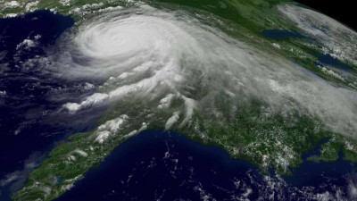
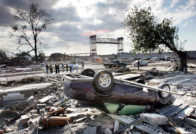
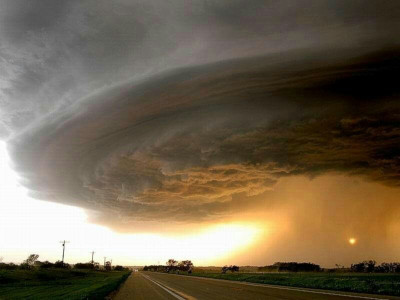

O que é um furacão?
Um furacão é um sistema circular de movimentação de ar, em uma velocidade superior a 105 km/h e com diâmetro de centenas de quilômetros, resultante da formação de um sistema de baixa pressão sobre regiões oceânicas.
Como se forma um furacão?
Os furacões formam-se, como já dissemos, sobre regiões oceânicas. Eles surgem quando as águas dos oceanos tornam-se mais quentes – com temperaturas iguais ou superiores a 27ºC – e há um elevado índice de evaporação, com a produção de uma grande quantidade de umidade, que será, depois, convertida nas massas de ar que formam os furacões.
Para surgirem, portanto, os furacões precisam de águas oceânicas quentes, o que é mais comum em regiões tropicais. A exceção, talvez, tenha sido o furacão Catarina que atingiu o sul do Brasil no Atlântico Sul, em uma zona temperada, no ano de 2004. Naquela ocasião, houve uma série de anomalias que contribuiu para o aquecimento incomum das águas da região.
Furacão Katrina, Agosto - 2005
O Katrina foi um ruracão categoria 5 que devastou parte do litoral Sul dos EUA, teve início no dia 23 de agosto e surgiu como uma depressão tropical e evoluiu até ganhar status de furacão, o estado da Luiziana e principalmente a cidade de Nova Orleans foi uma das mais atingidas sendo que até hoje são possiveis de se encontrar marcas do ocorrido pela cidade. Este é mais um fato que nos leva a lembrar de o quanto a natureza pode ser mortal.


